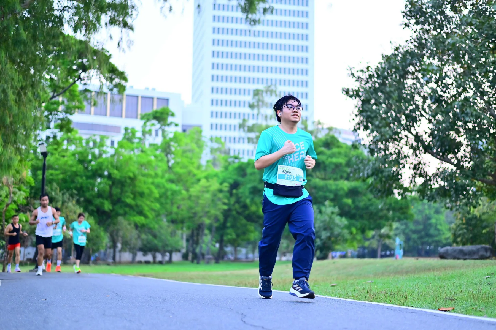
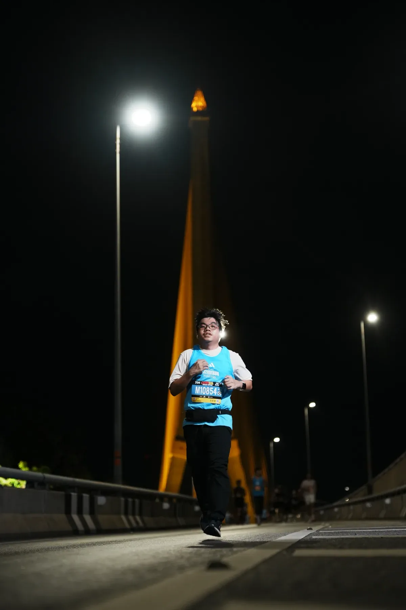
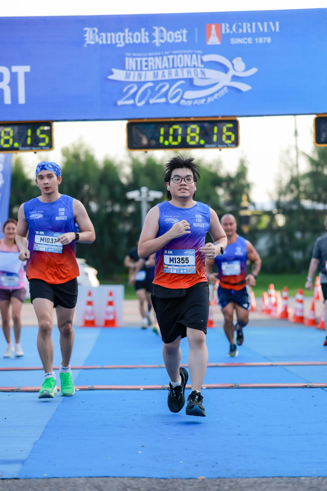

0km
Total race distance
01Miles & moments · Est. 2025
Every finish line becomes
a new starting point.
The running record
Last updated
0km
Total race distance
010events
Finish lines crossed
020runs
All-time run count
030km
All-time distance
04More than race days — a record of 223 runs, steady progress, and 1,260 kilometres of showing up.
Earned one race at a time
A handmade home for every finish line—a growing tower of the moments that made the miles worthwhile.
05medals
and counting
2025 — 2026
Five starts. Five finishes. Tap any race to see the full result.
What comes next
Two dates on the horizon. One step closer to my biggest distance yet.
21.1 km
My very first marathon.
42.2 km
Captured along the way
Five races, each with a story beyond the finish time.



Beyond the still frame
Short glimpses from the course—the movement, atmosphere, and energy behind the results.
Race day · Bangkok
Running moment · 10 km